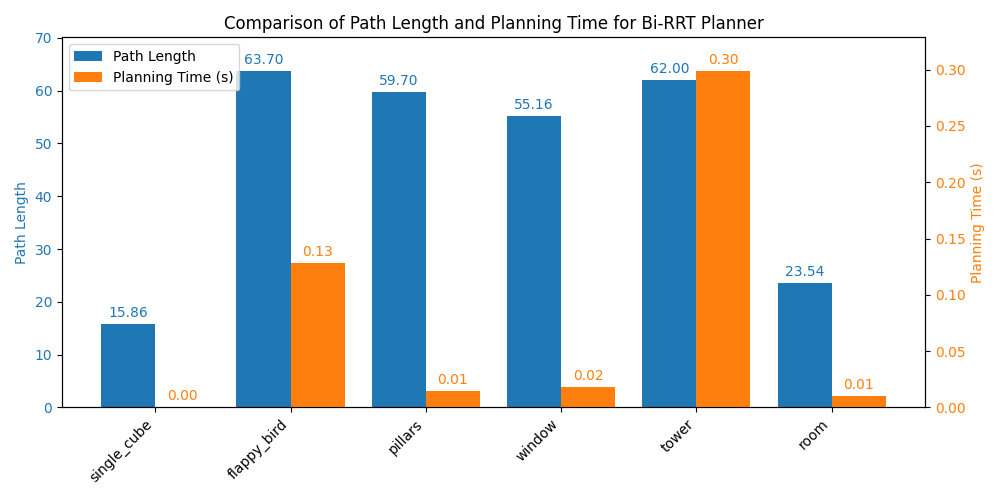
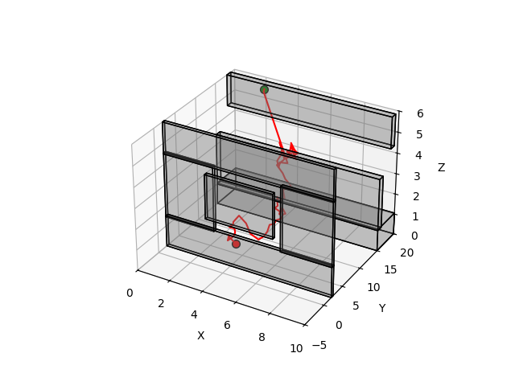
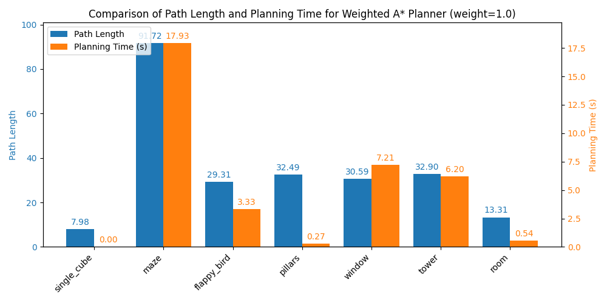
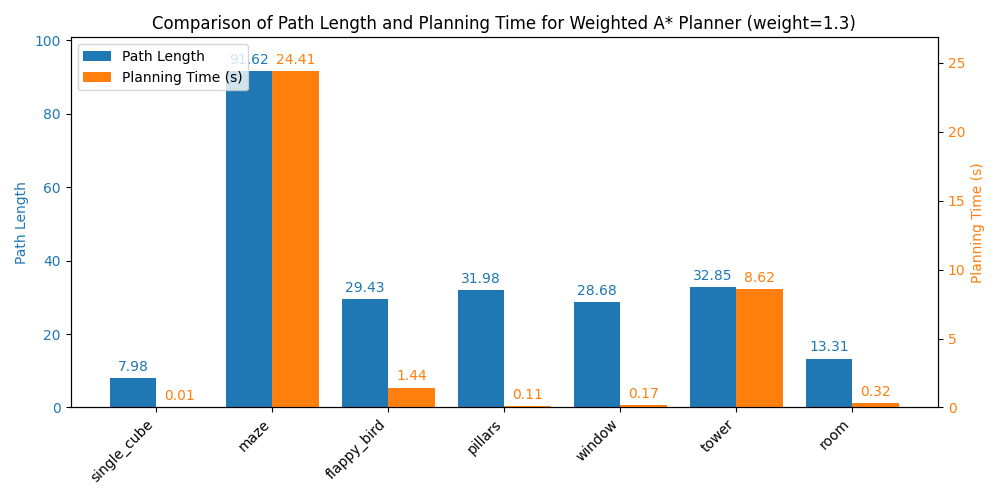
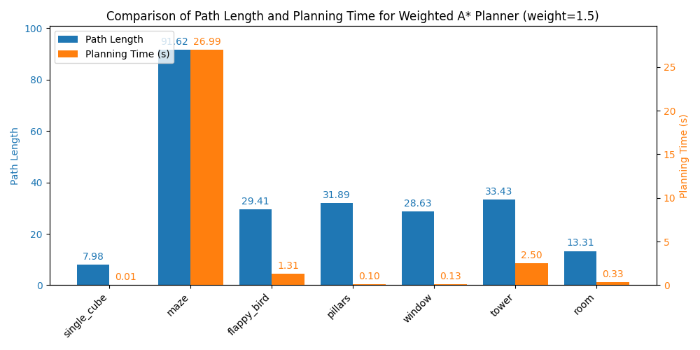
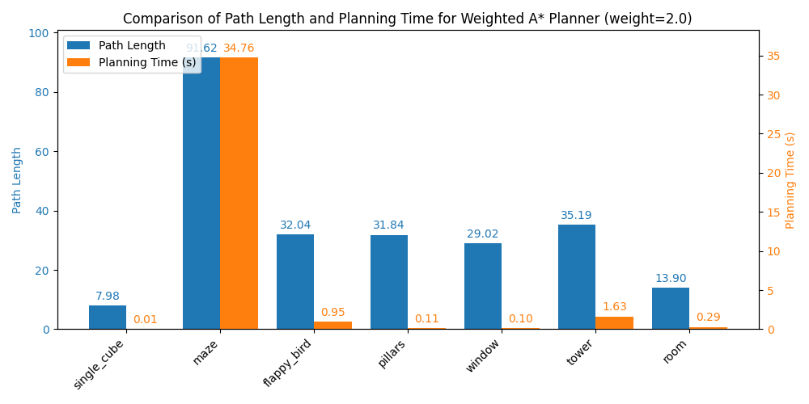
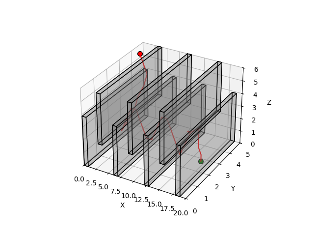

Motion planning is the problem of finding a collision-free path from a start configuration to a goal in a space cluttered with obstacles. This project implements and compares two fundamentally different strategies — sampling-based (Bi-RRT) and graph-search (Weighted A*) — across seven 3D environments of varying complexity: a single cube, a maze, flappy-bird-style corridors, pillars, a window gap, a tower, and a room.
Collision detection uses axis-aligned bounding box (AABB) segment tests. The comparison reveals a clear trade-off: Bi-RRT is extremely fast on open spaces but fails on topologically complex environments with narrow passages, while Weighted A* reliably solves all cases at the cost of higher computation time.
Grows two random trees simultaneously — one from the start, one from the goal — and attempts to connect them. Goal-biased sampling (pgoal = 0.05) steers exploration toward the goal. Trees connect when the gap between a node from each tree falls below 0.25 m. Fast on simple environments; struggles with narrow passages where random samples rarely penetrate.
Searches a voxelized grid with resolution 0.5 m and 26-neighbor connectivity (±1 in each axis). The weight parameter w ∈ {1.0, 1.3, 1.5, 2.0} scales the heuristic: w = 1.0 is optimal A*, higher weights trade path quality for speed. Guarantees a solution in all tested environments; significantly slower than Bi-RRT on mazes due to the exhaustive grid expansion.
Bi-RRT vs. Weighted A* (w = 1.0) across all seven test environments.
| Environment | Bi-RRT | RRT Time | RRT Length | Weighted A* | A* Time | A* Length |
|---|---|---|---|---|---|---|
| Single Cube | ✓ |
0.004 s | 7.80 | ✓ |
0.011 s | 8.08 |
| Maze | ✗ |
0.747 s | — | ✓ |
23.04 s | 91.72 |
| Flappy Bird | ✗ |
0.341 s | — | ✓ |
5.20 s | 29.31 |
| Pillars | ✗ |
0.591 s | — | ✓ |
0.425 s | 32.49 |
| Window | ✗ |
0.538 s | — | ✓ |
10.66 s | 30.59 |
| Tower | ✓ |
0.018 s | 20.00 | ✓ |
9.40 s | 32.90 |
| Room | ✓ |
0.009 s | 9.00 | ✓ |
0.783 s | 13.31 |







| Parameter | Value | Description |
|---|---|---|
max_iter | 500,000 | Bi-RRT max iterations |
step_size | 0.5 m | RRT steer step length |
p_goal | 0.05 | Goal-bias sampling probability |
grid_res | 0.5 m | A* voxel grid resolution |
| Connectivity | 26-neighbor | ±1 in x, y, z axes |